شبنم رضاپور
کسی که PDFها را راضی کرد محتوایشان را بیکموکاست لو بدهند.
این جزوه با استفاده از جزوهساز پاپیروس و به صورت خودکار تولید شده است. ممکن است شامل خطا یا برداشت نادرست باشد و نیازمند بررسی و بازبینی مجدد است.
در جلسههای تئوری ایمونولوژی، تاریخچهٔ ایمنیشناسی و چند اصطلاح و مفهوم پایه مطرح شده است. برای دنبالکردن کار آزمایشگاهی، شناخت ساختار آنتیژن و آنتیبادی ضروری است؛ ناآشنایی با این ساختارها میتواند کار عملی را دشوار کند. در این جلسه برهمکنشهای آنتیژن و آنتیبادی، کلاسها و ساختار آنتیبادیها، آگلوتیناسیون، تعیین گروه خونی ABO و Rh و تست رایت برای تشخیص تب مالت بررسی میشود. مباحث تئوری آنتیژن و آنتیبادی در جلسات دیگر ادامه مییابد.
ساختار آنتیبادی شبیه حرف انگلیسی Y است و بازوهای آن میتوانند به آنتیژن متصل شوند. این اتصال را میتوان به اتصال قفل و کلید تشبیه کرد: بخشی از آنتیژن با بخشی از آنتیبادی مکمل است.
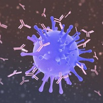
تصویر 1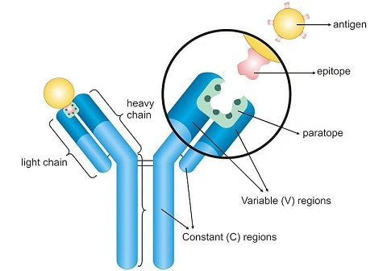
تصویر 2تمام قسمتهای یک عامل میکروبی پس از ورود به بدن بهعنوان آنتیژن شناخته نمیشوند؛ بخشهای مشخصی از آن میتوانند با آنتیبادی برخورد کنند و شناسایی شوند.
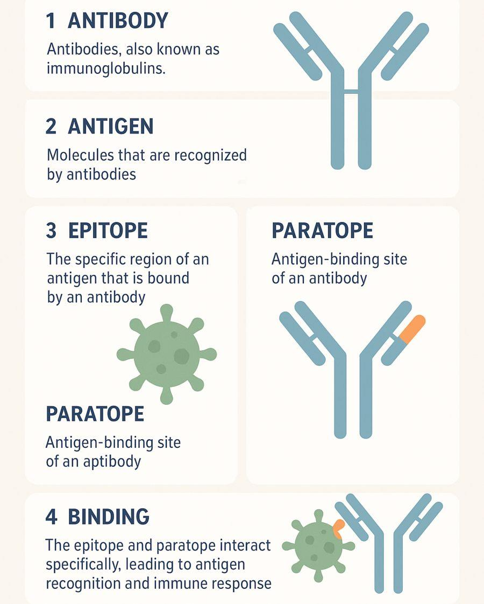
تصویر 3هر مونومر آنتیبادی چهار زنجیره دارد: دو زنجیرهٔ کوچک و دو زنجیرهٔ بلند. زنجیرههای کوچک، زنجیرههای سبک (light chains) نام دارند و زنجیرههای بلند، چون سنگینتر هستند، زنجیرههای سنگین (heavy chains) نام دارند. بنابراین، واحد ساختاری اصلی آنتیبادی یک مونومر متشکل از دو زنجیرهٔ سبک و دو زنجیرهٔ سنگین است.
در شکل زیر heavy chain ،light chain و همچنین نواحی Variable (V) regions و Constant (C) regions مشخص شدهاند.
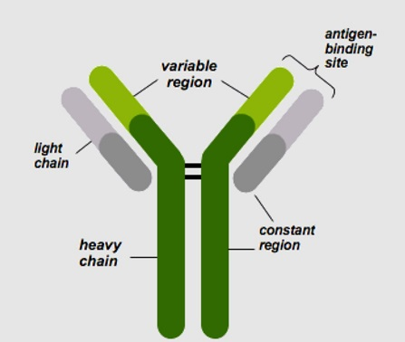
تصویر 4نکتهٔ تکمیلی: تحمل ایمنی (Immune Tolerance) و خودایمنی (Autoimmunity)
بدن انسان نیز دارای آنتیژنهای خودی است؛ بااینحال، در شرایط طبیعی، دستگاه ایمنی معمولاً به اجزای خود بدن حمله نمیکند. این ویژگی به فرایندی به نام تحمل ایمنی (Immune Tolerance) مربوط است.
در بیماریهای خودایمنی، تحمل نسبت به برخی اجزای خودی مختل میشود و دستگاه ایمنی به بافتهای بدن حمله میکند.
این مبحث در جلسات آیندهٔ درس، بهطور مفصلتر بررسی خواهد شد.
بهندرت پیش میآید که یک آنتیژن فقط یک اپیتوپ داشته باشد. یک عامل میکروبی، مانند باکتری ممکن است تعداد زیادی اپیتوپ داشته باشد که لزوماً از یک نوع نیستند.
اگر آنتیژن سلول B را برای ساخت آنتیبادی تحریک کند، در بدن دستکم کلون سلول B وجود دارند که میتوانند در برابر آن قرار بگیرند. اگر آنتیژن یک نوع اپیتوپ داشته باشد، از میان آن کلونها فقط یک نوع کلون را تحریک میکند؛ اگر سه نوع اپیتوپ متفاوت داشته باشد، میتواند سه نوع کلون را تحریک کند و در ادامه سه نوع آنتیبادی متفاوت ساخته شود. این فرایند به انتخاب کلونال (clonal selection) مربوط است که جلسهٔ قبل مطرح شد و در ادامهٔ مبحث آنتیبادیها بیشتر بررسی خواهد شد.
آنتیبادیها یا ایمونوگلوبولینها (Immunoglobulins; Ig) بر اساس ویژگیهای زنجیرهٔ سنگین خود به پنج کلاس اصلی تقسیم میشوند: IgG، IgM، IgA، IgE و IgD.
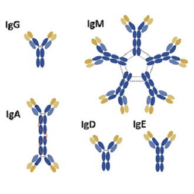
کلاسهای آنتیبادیدر برخورد بدن با یک عامل میکروبی، از جمله در تب مالت دو کلاس IgM و IgG اهمیت دارند. نامهای دیگر تب مالت، بروسلوز (brucellosis) و تب مدیترانهای هستند. در بیماریهای میکروبی، معمولاً نخستین آنتیبادیای که در بدن بالا میرود IgM است. پس از آن کلاسسوئیچینگ (class switching) رخ میدهد و کلاس آنتیبادی از IgM به IgG تبدیل میشود.
بیشترین آنتیبادی سرم خون IgG است و تقریباً ۷۵ تا ۸۰ درصد آنتیبادی سرم را تشکیل میدهد.
افزایش IgM در سرم خون در بسیاری از عفونتها میتواند نشاندهندهٔ قرارداشتن بیماری در فاز حاد (acute) باشد. با گذشت زمان، سطح IgM ممکن است کاهش یابد، درحالیکه IgG برای مدت طولانیتری در بدن باقی میماند و میتواند تا حدی نقش محافظتی داشته باشد. بنابراین، منفیشدن IgM همراه با مثبتماندن IgG میتواند با عبور از مرحلهٔ حاد عفونت سازگار باشد. این الگو در بسیاری از بیماریهای میکروبی دیده میشود.
مونومر آنتیبادی چهارزنجیرهای است. برخی ایمونوگلوبولینها میتوانند به شکل مونومر یا ساختارهای چندمونومری وجود داشته باشند. IgA میتواند به شکل مونومر یا دایمر وجود داشته باشد. همچنین ساختارهای تریمر و تترامر آن نیز گزارش شدهاند.
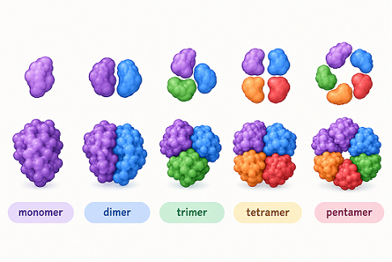
نامگذاری مجموعههای مولکولی بر اساس تعداد زیرواحدهاIgM در حالت کلی و شکل ترشحی خود، پنتامر (Pentamer) است. یعنی پنج مونومر آنتیبادی در کنار هم قرار گرفتهاند. در مقابل، اگر IgG به میکروب متصل شود، دو ظرفیت اتصال یا دو والانس (Valency) دارد.
IgM با پنج مونومر و دو ظرفیت اتصال برای هر مونومر، در مجموع ده ظرفیت اتصال به آنتیژن دارد. بنابراین، IgM میتواند با برقرارکردن اتصالات متعدد با آنتیژنهای اطراف، قدرت اتصال کلی بیشتری ایجاد کند؛ کاری که IgG به دلیل داشتن تنها دو ظرفیت اتصال، ممکن است نتواند به همان سرعت انجام دهد.
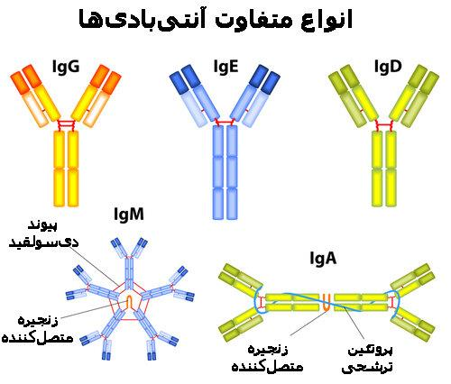
تصویر 5باندهای باریکی که مونومرهای IgM را به هم وصل میکنند، باندهای دیسولفیدی (disulfide bonds) هستند. در آزمایشگاه از این ویژگی استفاده میشود: مواد احیاکننده، پیوندهای دیسولفیدی را میشکنند و گروههای سولفیدریل (SH) حاصل میشوند.
مادهٔ احیاکنندهای که معمولاً در آزمایشگاه استفاده میشود و نام یک تست هم هست، ۲-مرکاپتواتانول (2-mercaptoethanol) است که به آن 2ME میگویند. در آزمایشگاه ایمونولوژی تستی به نام تست 2ME وجود دارد که در کار با بیماران مبتلا به تب مالت با آن آشنا میشوید.
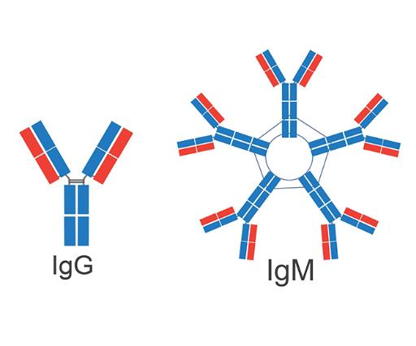
تصویر 6از این ویژگی در برخی تستها برای جداکردن IgM استفاده میشود. در بیماران مبتلا به تب مالت، جداکردن IgM میتواند مشکلساز باشد: در حالت معمول، IgM در فاز حاد بالا میرود و با گذشت زمان و ورود بیماری به فاز تحتحاد (subacute) و مزمن، کمکم حذف میشود؛ اما این الگو در بیماران تب مالت برقرار نیست. علت این تفاوت بعداً توضیح داده میشود و به همین دلیل برای این بیماران از مادهٔ احیاکننده استفاده میکنند.
IgD آنتیبادی نسبتاً حساسی است و در برابر پروتئازها (proteases) آسیبپذیری بالایی دارد؛ به همین دلیل، ممکن است بهسرعت تجزیه شود. این آنتیبادی حدود ۰/۲ درصد از کل آنتیبادیهای موجود در سرم خون را تشکیل میدهد. با وجود غلظت پایین در سرم، IgD نقش مهمی در عملکرد سیستم ایمنی دارد و اهمیت آن بررسی خواهد شد.
اساس بسیاری از تستهایی که در درس ایمنیشناسی ۱ انجام میشوند، واکنش آگلوتیناسیون است. در حال حاضر، آشنایی با مبنای رسوبگذاری (Precipitation) و فلوکولاسیون (Flocculation) ضروری نیست؛ این دو روش در ادامهٔ جلسات، با هدف مقایسه بررسی خواهند شد.
آگلوتیناسیون انواع مختلفی دارد که از جملهٔ آنها میتوان به آگلوتیناسیون مستقیم (Direct Agglutination)، آگلوتیناسیون غیرمستقیم (Indirect Agglutination)، آگلوتیناسیون غیرفعال (Passive Agglutination) و آگلوتیناسیون غیرفعال معکوس (Reverse Passive Agglutination) اشاره کرد.
تست رایت (Wright Test) یکی از تستهای مهم در آزمایشگاه ایمنیشناسی است که برای تشخیص تب مالت (Brucellosis) به کار میرود. در این جلسه، تست رایت بهصورت تئوری بررسی میشود و طی چند جلسه در کلاس آزمایشگاه، مراحل انجام تست و نحوهٔ بررسی و تفسیر نتایج آن بهصورت عملی آموزش داده خواهد شد.
یکی از نمونههای روشن آگلوتیناسیون، تعیین گروه خونی ABO است. روی سطح گلبولهای قرمز (RBC) گروه A، آنتیژن A وجود دارد. در گروه B، آنتیژن B (دقیقتر، اپیتوپهای B) وجود دارد. در گروه AB هر دو آنتیژن A و B وجود دارند و در گروه O هیچکدام از این دو آنتیژن وجود ندارد.
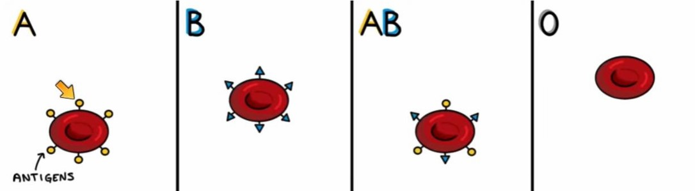
تصویر 7در تعیین گروه خونی، آنتیژنهای Rh نیز بررسی میشوند: اگر فرد آنتیژن Rh را داشته باشد، Rh مثبت است و اگر آن را نداشته باشد، Rh منفی است. آنتیژن Rh نیز روی سطح گلبول قرمز اپیتوپ مشخصی دارد.
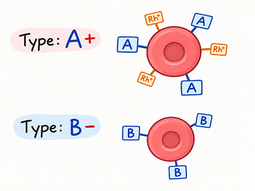
تصویر 8برای تعیین گروه خونی در سیستمهای ABO و Rh، از سه معرف آنتیبادی استفاده میشود:
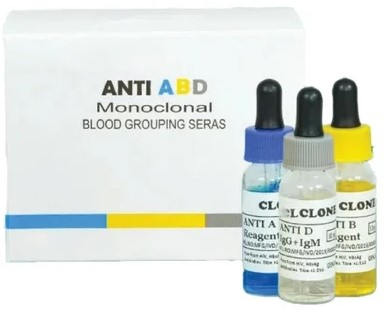
تصویر 9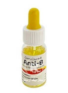
تصویر 10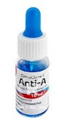
تصویر 11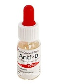
تصویر 12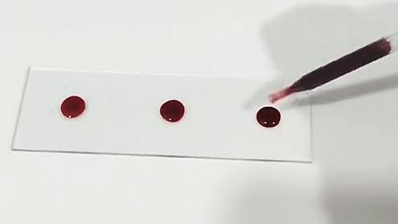
تصویر 13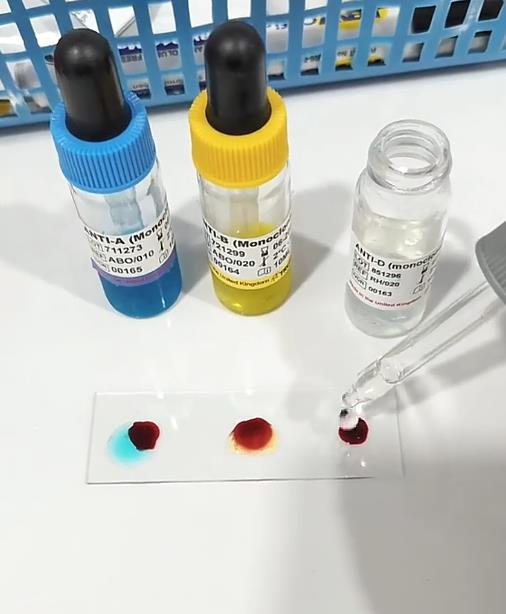
تصویر 14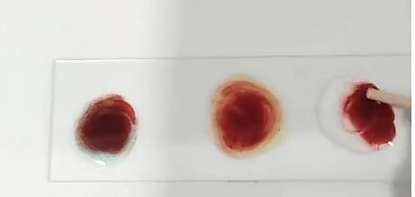
تصویر 15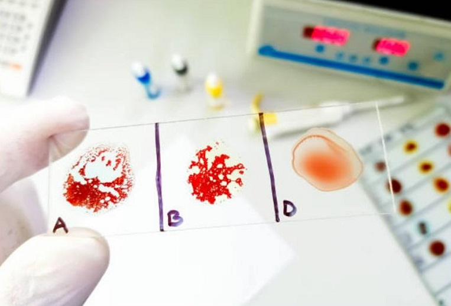
تصویر 16در آزمایش تعیین گروه خونی، واکنش با معرفهای Anti-A و Anti-B معمولاً در مدت کوتاهی، اغلب کمتر از ۳۰ ثانیه، قابل مشاهده است. بااینحال، در صورت عدم مشاهده آگلوتیناسیون، باید واکنش تا پایان زمان تعیینشده در دستورالعمل کیت، معمولاً حداکثر ۲ دقیقه، بررسی شود. در گروه خونی O، به دلیل نبود آنتیژنهای A و B روی سطح گلبولهای قرمز، انتظار میرود واکنش با هر دو معرف منفی باشد. در بررسی Rh، مشاهده واکنش با معرف Anti-D ممکن است به زمان بیشتری نیاز داشته باشد؛ بنابراین، باید تا حدود ۲ دقیقه صبر کرد و سپس نتیجه را بررسی کرد.
در این آزمایش، بهجای اصطلاح عمومی «لختهشدن»، از اصطلاح علمی آگلوتیناسیون (Agglutination) استفاده میشود. آگلوتیناسیون به تجمع قابل مشاهده گلبولهای قرمز در اثر اتصال اختصاصی آنتیبادی به آنتیژنهای سطح آنها گفته میشود. در این فرایند، آنتیژنهای گروه خونی روی غشای گلبولهای قرمز که غیرمحلول هستند، قرار دارند و بخشی از ساختار غشایی سلول محسوب میشوند. آنتیبادیهای موجود در معرف، پروتئینهایی محلول هستند که با اتصال به آنتیژن اختصاصی خود، گلبولهای قرمز را به یکدیگر پیوند میدهند و موجب تجمع آنها میشوند. بنابراین، اساس این آزمایش، واکنش اختصاصی آنتیژن–آنتیبادی و ایجاد آگلوتیناسیون قابل مشاهده است.
نقش ویو باکس در واکنش Rh
در بعضی آزمایشگاههای بانک خون، دستگاهی به نام ویو باکس (view box) وجود دارد که نور LED و مقداری گرما دارد. اسلاید را روی آن میگذارند و خود ویو باکس را با دست حرکت میدهند؛ در این حالت شیکینگ (shaking) و تیلتینگ (tilting) انجام میشود. ویو باکس اسلاید را تا ۳۷ درجه گرم میکند. برای واکنش Rh دمای ۳۷ درجه لازم است تا واکنش بهخوبی انجام شود، اما برای ABO لازم نیست و واکنش بهسرعت دیده میشود.
یکی از عوامل تفاوت سرعت واکنش ABO و Rh، کلاس آنتیبادی است. آنتیبادی ABO از کلاس IgM است. IgM پنتامر است و بهسرعت میان RBCها پل تشکیل میدهد؛ بنابراین آگلوتیناسیون در کمتر از ۳۰ ثانیه دیده میشود. آنتیبادی Rh از کلاس IgG است.
در نمونهٔ نشاندادهشدهٔ زیر، واکنش A و واکنش B مشخصاند و نتیجهٔ Rh منفی است. در نمونه مقداری رسوب دیده میشود و گلبولهای قرمز تهنشین شدهاند. پس از برداشتن اسلاید و بررسی نمونه، دانههای ریز و زبر دیده میشوند؛ تشخیص آنها ممکن است در ابتدا، به ویژه از فاصلهٔ دور، دشوار باشد. شکل آگلوتیناسیونها نیز متفاوت است: در یک حالت، قطرات به یکدیگر متصل شده و تودهای تشکیل میدهند، درحالیکه در واکنش Rh، تجمع ممکن است به شکل دانههای ریز و بههمپیوسته دیده شود.
تصویر 17
عامل دیگر تفاوت واکنش، ماهیت آنتیژن است. اگر آنتیژن پلیساکاریدی یا کربوهیدراتی باشد، تنها آنتیبادی ایجادشده علیه آن از کلاس IgM است. آنتیژنهای سطح RBC در گروههای ABO کربوهیدراتیاند و به همین دلیل آنتیبادی علیه آنها IgM است. آنتیژن Rh پروتئینی است؛ بنابراین پاسخ از IgM به سمت IgG کلاسسوئیچ میکند و حدود ۹۵ تا ۹۶ درصد آنتیبادی ایجادشده در آنجا IgG است. به همین دلیل، برای تعیین ABO از آنتیبادیهای کلاس IgM و برای Rh از آنتیبادیهای کلاس IgG استفاده میشود.
در تست رایت برای تشخیص تب مالت، در سرم بیمار آنتیبادی وجود دارد و در آزمایشگاه آنتیژن را به آن اضافه میکنند. این آنتیژن از عامل بیماریزا، یعنی باکتری بروسلا (Brucella)، تهیه میشود. گونههای بیماریزای این میکروب بعداً توضیح داده میشوند؛ این میکروب بسیار خطرناک است و آمادهسازی آن بهسادگی انجام نمیشود. افراد متخصص، این میکروب را غیرفعال میکنند، با محلول بافری مخلوط میکنند و به شکل سوسپانسیون درمیآورند. سپس محلول رنگی به آن اضافه میکنند.
یکی از این مواد رزبنگال (Rose Bengal) است؛ نام این رنگ به رز بنگال در هندوستان برمیگردد و ممکن است امروزه نمونهٔ مشابه آن را بهصورت مصنوعی تولید کنند. رنگ آن صورتی پررنگ است. این محلول با pH خاصی تهیه شده است؛ علت اسیدیکردن pH و کاربرد این رنگ بعداً توضیح داده میشود.
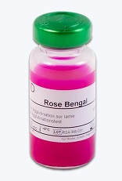
تصویر 18آنتیژن مورد استفاده برای تب مالت بهصورت ویال آماده است و سرم بیمار بهعنوان منبع آنتیبادی به کار میرود.
برای تست رایت و ویدال، نمونه را باید دستکم ۳ تا ۴ دقیقه تکان داد. این زمان برای رایت و ویدال است و برای تستهای دیگر معمولاً حدود دو دقیقه است. اگر نتیجه مثبت شد، باید اقدامات دیگری نیز انجام داد و تستهای تأییدی هم وجود دارند که بعداً توضیح داده میشوند.
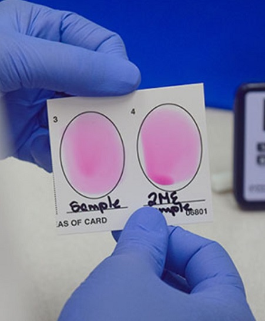
تصویر 19برای تشخیص تب مالت بیش از یک آنتیژن به کار میرود: یکی آبی و دیگری صورتی است و تفاوت آنها در آزمایشگاه توضیح داده میشود. در تصویر زیر، آنتیژن آبیرنگ دیده میشود.
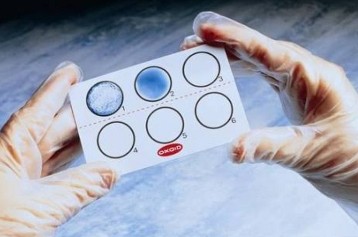
تصویر 20اسلایدها زمینهٔ سفید یا مشکی دارند. اگر آنتیژن آبی استفاده میکنید، زمینه باید سفید باشد تا کنتراست وجود داشته باشد؛ برای زمینهٔ مشکی آنتیژنهایی با رنگ سفید در نظر گرفته شدهاند.
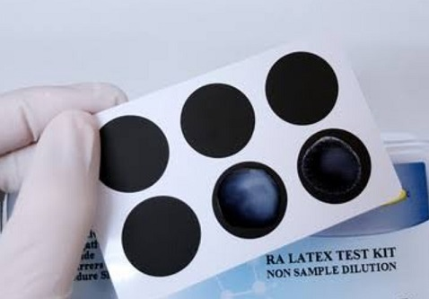
تصویر 21این مباحث به یکدیگر مرتبطاند و ایمونولوژی تا حدی مفهومی است؛ اگر یک جلسه حضور نداشته باشید یا اصطلاحات مربوط به آنتیژن و آنتیبادی را متوجه نشوید، دنبالکردن مباحث جلسههای بعد دشوار میشود. برخلاف بعضی مباحث باکتریشناسی که موضوع یک جلسه لزوماً به جلسهٔ بعد وابسته نیست، در ایمونولوژی باید میان مطالب ارتباط برقرار کرد.
| مفهوم | جایگاه | نقش در اتصال |
|---|---|---|
| اپیتوپ (epitope) | ناحیهای از آنتیژن | بهطور اختصاصی با آنتیبادی اتصال برقرار میکند |
| پاراتوپ (paratope) | ناحیهای از آنتیبادی | به اپیتوپ متصل میشود؛ محل اتصال آنتیژن روی آنتیبادی است |
| بخش مونومر آنتیبادی | تعداد در هر مونومر | نام در اسلاید |
|---|---|---|
| زنجیرهٔ کوچک | ۲ | زنجیرهٔ سبک (light chain) |
| زنجیرهٔ بلند | ۲ | زنجیرهٔ سنگین (heavy chain) |
| مجموع زنجیرهها | ۴ | دو زنجیرهٔ سبک و دو زنجیرهٔ سنگین |
| تنوع اپیتوپ در آنتیژن | کلونهای سلول B تحریکشده | نتیجهٔ بیانشده در درس |
|---|---|---|
| یک نوع اپیتوپ | یک نوع کلون | تحریک یک نوع کلون |
| سه نوع اپیتوپ متفاوت | سه نوع کلون | ساختهشدن سه نوع آنتیبادی متفاوت |
| کلاسهای آنتیبادی ذکرشده |
|---|
| IgG |
| IgM |
| IgA |
| IgE |
| IgD |
| ویژگی یا وضعیت | IgM | IgG |
|---|---|---|
| در بیماریهای میکروبی | معمولاً نخستین آنتیبادیای است که بالا میرود | پس از class switching از IgM به آن تبدیل میشود |
| ارتباط با فاز بیماری طبق درس | بالابودن نشاندهندهٔ فاز حاد است؛ پایینآمدن نشان میدهد فرد از فاز حاد خارج شده است | اگر IgM منفی و IgG باقی مانده باشد، IgG میتواند تا حدی محافظت ایجاد کند |
| سهم از آنتیبادی سرم | حدود ۵ تا ۱۰ درصد | تقریباً ۷۵ تا ۸۰ درصد |
| آنتیبادی | شکل یا تعداد مونومرها | ظرفیت اتصال مطابق توضیح درس |
|---|---|---|
| IgA | میتواند تکمونومر، دایمر، تریمر یا تترامر باشد | به ازای هر مونومر دو ظرفیت |
| IgD | میتواند تکمونومر باشد | دوظرفیتی |
| IgG | مونومر | دوظرفیتی؛ دو ظرفیت اتصال |
| IgM | پنتامر؛ پنج مونومر | دو ظرفیت اتصال برای هر مونومر؛ در مجموع ده ظرفیت اتصال |
| ویژگی | توضیح |
|---|---|
| باندهای اتصالدهندهٔ مونومرهای IgM | باندهای دیسولفیدی (disulfide bonds) |
| اثر مواد احیاکننده | بازکردن باندهای دیسولفیدی و تشکیل گروههای SH |
| مادهٔ احیاکنندهٔ نامبردهشده | ۲-مرکاپتواتانول (2-mercaptoethanol)، یا 2ME |
| کاربرد ذکرشده | استفاده از این ویژگی در برخی تستها برای جداکردن IgM؛ تست 2ME در کار با بیماران تب مالت |
| ویژگی IgD | توضیح |
|---|---|
| حساسیت | به پروتئازها حساس است |
| سرنوشت پس از ساختهشدن | بهعلت این حساسیت سریع تخریب میشود |
| سهم از آنتیبادی سرم | حدود ۰/۲ درصد |
| ساختار ذکرشده | میتواند به شکل تکمونومر باشد |
| مورد | توضیح در درس |
|---|---|
| آگلوتیناسیون | اتصال تعداد زیادی آنتیژن و آنتیبادی بهصورت شبکهای که با چشم غیرمسلح دیده میشود |
| انواع نامبردهشده | مستقیم، غیرمستقیم، reverse passive agglutination و passive agglutination |
| تستهای نامبردهشده | CRP، RF، Wright test و Widal |
| Wright test | چند جلسه از کلاس آزمایشگاه را در بر میگیرد |
| Widal | اساس آن direct agglutination است |
| precipitation و flocculation | برای مقایسه در جلسات آینده توضیح داده میشوند |
| نوع واکنش | وضعیت آنتیژن | وضعیت آنتیبادی |
|---|---|---|
| آگلوتیناسیون مستقیم | نامحلول | محلول |
| گروه خونی ABO | آنتیژنهای ذکرشده روی سطح RBC |
|---|---|
| A | آنتیژن A |
| B | آنتیژن B؛ دقیقتر، اپیتوپهای B |
| AB | آنتیژن A و آنتیژن B |
| O | هیچکدام از آنتیژنهای A و B |
| معرف آنتیبادی | هدفِ ذکرشده | رنگ |
|---|---|---|
| anti-A | ضد آنتیژن A | آبی |
| anti-B | ضد آنتیژن B | زرد |
| anti-D | بررسی Rh | بیرنگ |
| مرحله | کار | نکتهٔ ذکرشده |
|---|---|---|
| ۱ | روی اسلاید شیشهای سه قطره خون بگذارید و بهترتیب anti-A، anti-B و anti-D را بیفزایید | — |
| ۲ | هر قطره را با اپلیکاتور مخلوط کنید | آرام مخلوط کنید تا قطره نپاشد |
| ۳ | برای هر قطره اپلیکاتور جداگانه به کار ببرید | از انتقال نمونهٔ اول به دوم و بههمریختن تست جلوگیری میکند |
| ۴ | اسلاید را روی شیکر بگذارید یا با دست تکان دهید | نمونهها روی هم نریزند؛ در آزمایشگاه معمولاً از دست استفاده میشود |
| ۵ | نمونه را تکان دهید | دو دقیقهٔ کامل؛ اگر هنگام تکاندادن صحبت میکنید، دست باید همچنان حرکت کند |
| مورد | زمان یا شرایط ذکرشده |
|---|---|
| anti-A و anti-B | معمولاً پاسخ در کمتر از ۳۰ ثانیه دیده میشود |
| گروه خونی O | تا پایان دو دقیقه صبر میکنند تا ببینند واکنش منفی میماند یا نه |
| Rh | چند دقیقه صبر میکنند و دو دقیقه را کامل میکنند |
| view box | نور LED و مقداری گرما دارد و اسلاید را تا ۳۷ درجه گرم میکند |
| واکنش Rh | دمای ۳۷ درجه لازم است تا واکنش بهخوبی انجام شود |
| واکنش ABO | به دمای ۳۷ درجه نیاز ندارد و بهسرعت دیده میشود |
| ویژگی | ABO | Rh |
|---|---|---|
| آنتیبادی مورد استفاده/ذکرشده | IgM | IgG |
| ماهیت آنتیژن | کربوهیدراتی یا پلیساکاریدی | پروتئینی |
| توضیح ساختاری یا کلاسی | IgM پنتامر است و بهسرعت میان RBCها پل تشکیل میدهد | پاسخ از IgM به سمت IgG کلاسسوئیچ میکند |
| سرعت یا شرایط واکنش | آگلوتیناسیون معمولاً در کمتر از ۳۰ ثانیه دیده میشود؛ دمای ۳۷ درجه لازم نیست | برای واکنش دمای ۳۷ درجه لازم است تا واکنش بهخوبی انجام شود |
| نسبت آنتیبادی ذکرشده | — | حدود ۹۵ تا ۹۶ درصد آنتیبادی ایجادشده در آنجا IgG است |
| جزء یا مرحله | توضیح |
|---|---|
| سرم بیمار | منبع آنتیبادی |
| آنتیژن | از باکتری بروسلا (Brucella) تهیه میشود |
| آمادهسازی میکروب | افراد متخصص آن را غیرفعال میکنند، با محلول بافری مخلوط و بهصورت سوسپانسیون درمیآورند |
| محلول رنگی | پس از آمادهسازی سوسپانسیون به آن اضافه میشود |
| رزبنگال (Rose Bengal) | مادهٔ نامبردهشده؛ رنگ آن صورتی پررنگ است |
| pH آنتیژن | آنتیژن با pH خاص تهیه شده است؛ علت اسیدیکردن pH و کاربرد آن بعداً توضیح داده میشود |
| مورد | زمان تکاندادن |
|---|---|
| تست رایت و ویدال | دستکم ۳ تا ۴ دقیقه |
| تستهای دیگر | معمولاً حدود دو دقیقه |
| زمینهٔ اسلاید | رنگ آنتیژن ذکرشده |
|---|---|
| سفید | آبی |
| مشکی | سفید |
تفاوت اپیتوپ و پاراتوپ چیست و چگونه در شناسایی اختصاصی آنتیژن نقش دارند؟
اپیتوپ ناحیهای از آنتیژن است که آنتیبادی آن را شناسایی میکند و کوچکترین بخش آنتیژن است که میتواند بهطور اختصاصی متصل شود. پاراتوپ ناحیهٔ متناظر آنتیبادی و محل اتصال آنتیژن روی آنتیبادی است. این دو بهطور اختصاصی با هم برهمکنش میکنند و اتصالشان به شناسایی آنتیژن و پاسخ ایمنی میانجامد.
ساختار زنجیرهای یک مونومر آنتیبادی را شرح دهید و تعداد ظرفیتهای اتصال IgG و IgM را طبق درس مقایسه کنید.
هر مونومر آنتیبادی چهار زنجیره دارد: دو زنجیرهٔ سبک و دو زنجیرهٔ سنگین. IgG دو ظرفیت اتصال دارد. IgM پنتامر است و با دو ظرفیت اتصال برای هر یک از پنج مونومر، ده ظرفیت اتصال دارد.
تغییر معمول IgM و IgG در بیماریهای میکروبی را توضیح دهید و بگویید بالابودن یا پایینآمدن IgM در درس به چه وضعیتی نسبت داده شده است.
معمولاً IgM نخستین آنتیبادیای است که در بیماریهای میکروبی بالا میرود و بعد از class switching، کلاس آنتیبادی از IgM به IgG تبدیل میشود. بالابودن IgM نشاندهندهٔ فاز حاد است و پایینآمدن آن نشان میدهد فرد از فاز حاد خارج شده است. اگر IgM منفی و IgG باقی مانده باشد، IgG میتواند تا حدی محافظت ایجاد کند.
مراحل انجام آزمایش تعیین گروه خونی روی اسلاید و دلیل استفاده از اپلیکاتورهای جداگانه را شرح دهید.
سه قطره خون روی اسلاید میگذارند و بهترتیب anti-A، anti-B و anti-D را به آنها میافزایند. هر قطره را با اپلیکاتور مخلوط میکنند و برای هر قطره از اپلیکاتور جداگانه استفاده میکنند تا نمونهٔ اول به نمونهٔ دوم منتقل نشود و تست بههم نریزد. سپس اسلاید را روی شیکر میگذارند یا با دست تکان میدهند، بهطوریکه نمونهها روی هم نریزند، و نمونه را دو دقیقهٔ کامل تکان میدهند.
تفاوتهای گفتهشده میان واکنش ABO و Rh را از نظر آنتیبادی، ماهیت آنتیژن و سرعت یا شرایط واکنش بیان کنید.
آنتیبادی ABO از کلاس IgM است و آنتیژنهای سطح RBC در گروههای ABO کربوهیدراتیاند؛ IgM پنتامر است و سریع میان RBCها پل تشکیل میدهد. بنابراین، آگلوتیناسیون معمولاً در کمتر از ۳۰ ثانیه دیده میشود و برای ABO دمای ۳۷ درجه لازم نیست. آنتیبادی Rh از کلاس IgG است و آنتیژن Rh پروتئینی است؛ پاسخ از IgM به سمت کلاسسوئیچ IgG میکند و برای انجام مناسب واکنش Rh دمای ۳۷ درجه لازم است.
کدام گزینه تعریف اپیتوپ را مطابق درس بیان میکند؟
اپیتوپ ناحیهای از آنتیژن است که آنتیبادی آن را شناسایی میکند.
هر مونومر آنتیبادی چند زنجیره دارد و ترکیب آن چیست؟
هر مونومر آنتیبادی چهار زنجیره دارد: دو زنجیرهٔ سبک و دو زنجیرهٔ سنگین.
طبق مثال انتخاب کلونال در درس، آنتیژنی با سه نوع اپیتوپ متفاوت چه نتیجهای میتواند داشته باشد؟
درس توضیح میدهد که سه نوع اپیتوپ متفاوت میتواند سه نوع کلون را تحریک کند و در ادامه سه نوع آنتیبادی متفاوت ساخته شود.
کدام توالی، تغییر معمول کلاس آنتیبادی در بیماریهای میکروبی را نشان میدهد؟
معمولاً IgM نخستین آنتیبادیای است که بالا میرود و سپس class switching از IgM به IgG رخ میدهد.
کدام گزینه دربارهٔ شکل IgM و ظرفیت اتصال آن درست است؟
IgM پنتامر است و با دو ظرفیت اتصال برای هر مونومر، در مجموع ده ظرفیت اتصال دارد.
در آگلوتیناسیون مستقیم، وضعیت آنتیژن و آنتیبادی چگونه است؟
در تعریف آگلوتیناسیون مستقیم، آنتیژن نامحلول و آنتیبادی محلول است.
کدام ترکیب معرف و رنگ آن در تعیین گروه خونی مطابق درس است؟
رنگهای ذکرشده برای معرفها عبارتاند از anti-A آبی، anti-B زرد و anti-D بیرنگ.
برای بررسی Rh، طبق درس چه دمایی در view box لازم است تا واکنش بهخوبی انجام شود؟
view box اسلاید را تا ۳۷ درجه گرم میکند و برای واکنش Rh دمای ۳۷ درجه لازم است.
در تست 2ME، مادهٔ نامبردهشده چه اثری بر باندهای دیسولفیدی دارد؟
مواد احیاکننده باندهای دیسولفیدی را باز میکنند و گروههای SH کنار هم قرار میگیرند؛ مادهٔ نامبردهشده 2-mercaptoethanol یا 2ME است.
زمان تکاندادن ذکرشده برای تست رایت و ویدال چقدر است؟
برای تست رایت و ویدال نمونه را دستکم ۳ تا ۴ دقیقه تکان میدهند؛ برای تستهای دیگر معمولاً حدود دو دقیقه است.
ادیتور: الهه کشاورزنژاد
منابع استفادهشده:
برآورد تقریبی تکمیل محتوا: پوشش محتوای ارائهشده در اسلایدها و صوت در جزوه کامل انجام شده است؛ این برآورد تضمین ریاضیِ نبود هرگونه کاستی نیست.